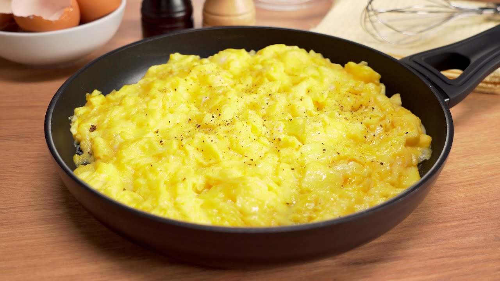

Scrambled Eggs

Description
Eggs are great. There all sorts of “basic” ways of having an egg. My
favorite way is having it scrambled.
Scrambled eggs are easy to customize. E.g. start by frying any of:
onions, bits of ham, mushrooms, chopped tomatoes, etc., before cracking the
eggs in.
Ingredients
- eggs
- butter
- salt
- pepper
- onions (optional)
- ham (optional)
- mushrooms (optional)
- chopped tomatoes (optional)
Steps
- Heat up butter or oil on a pan.
- Optional: add some things to have with eggs, i.e. chopped
onions.
- Crack some eggs into the pan.
- Start scrambling with a wooden spatula.
- Cook until desired dryness.
- Serve seasoned with salt and pepper.
Source